毕业设计-随机图片生成器
领域：艺术/平面设计
类别：网页设计
时间：2019/05/04
随机图片生成器使用网页设计的形式，通过使用HTML5+CSS以及JavaScript语言进行编程，使计算机或智能手机按照作者要求创作出数量庞大且具有随机不同风格...
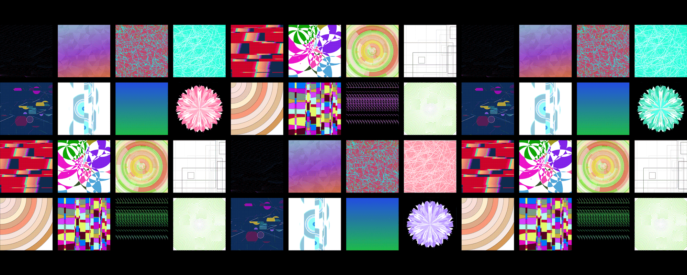
毕业设计-随机图片生成器
随机图片生成器使用网页设计的形式，使用HTML5+CSS以及JavaScript语言进行编程，并通过服务器的架设以及网站实时建立，使计算机或智能手机按照作者要求创作出数量庞大且具有随机不同风格的艺术作品，并以此来探寻生成艺术与平面设计的关系...
通过访问IP地址查看毕业设计：http://188.131.251.32/
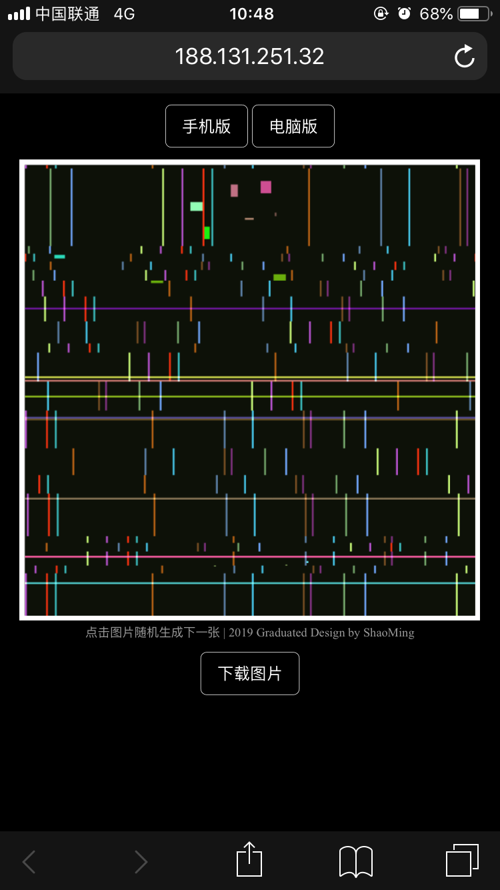
随机图片生成器的网页形式
随机图片生成器作为一个毕业设计，为应对不同的浏览方式，同时考虑到了手机和计算机浏览器两个版本，手机版可以通过扫描二维码直接浏览手机版的竖排版网页，而计算机可以通过浏览器直接访问横排版网页。
在手机版网页的上方和浏览器版网页的右上方我设置了“手机版”和“电脑版”两个按钮，方便不同电子设备间的互相切换，默认为手机版。
←手机版 电脑版 ↓
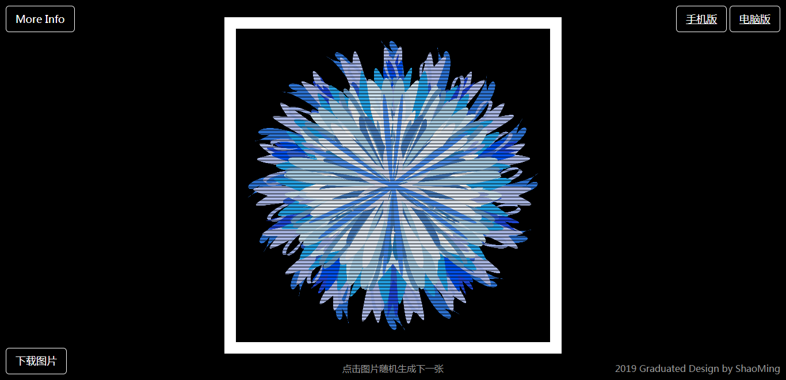
部分随机生成图片赏析
随着每一次图片的点击，网页便会运行相应的代码随机生成一张新的图片，并有一定几率赋予某种特殊效果，图片的种类、颜色、形式等都是由代码控制进行随机赋予。
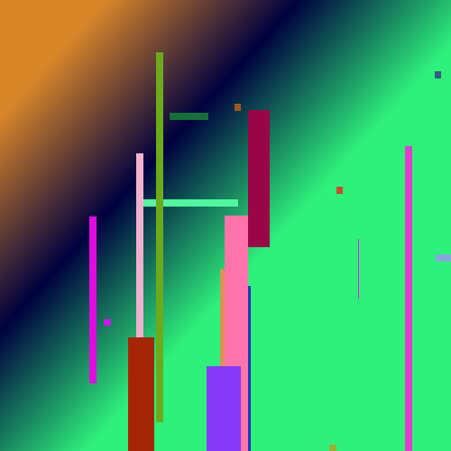
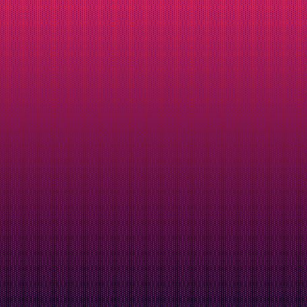
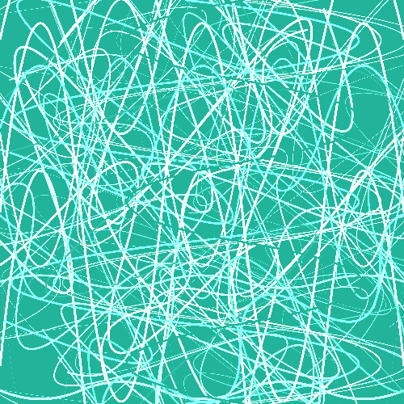
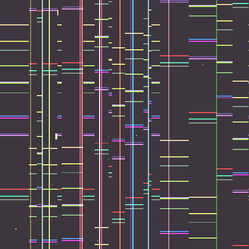
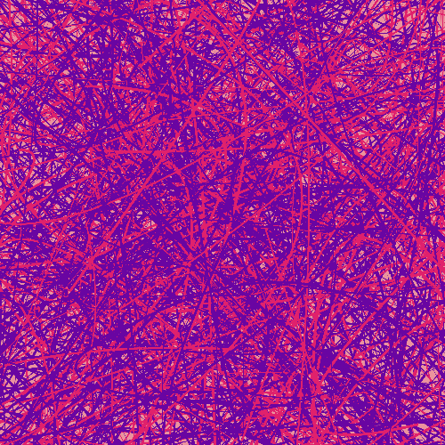
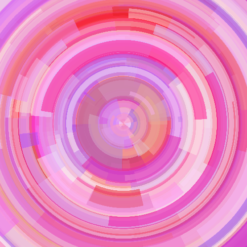
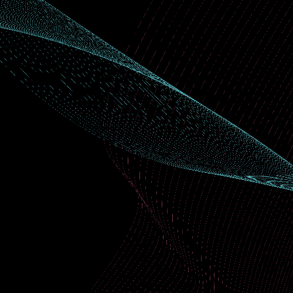
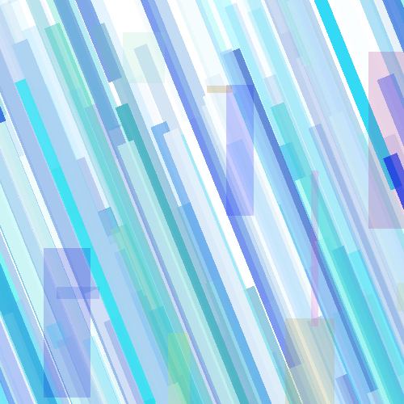
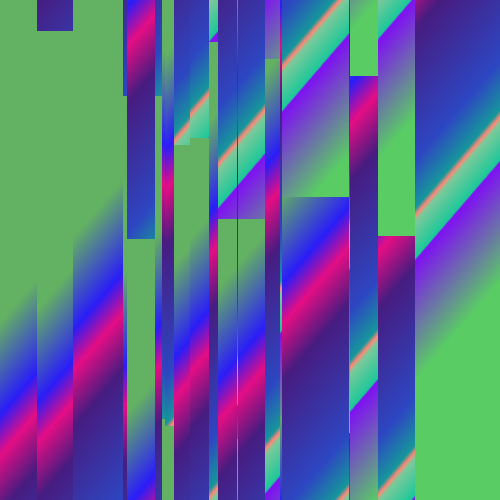
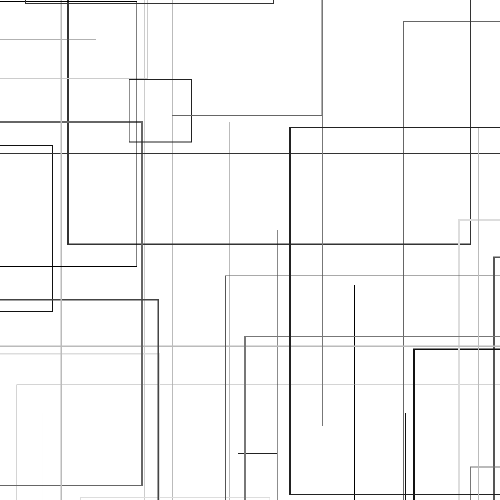
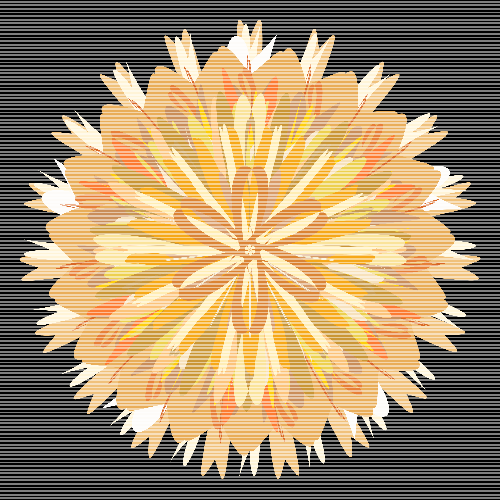